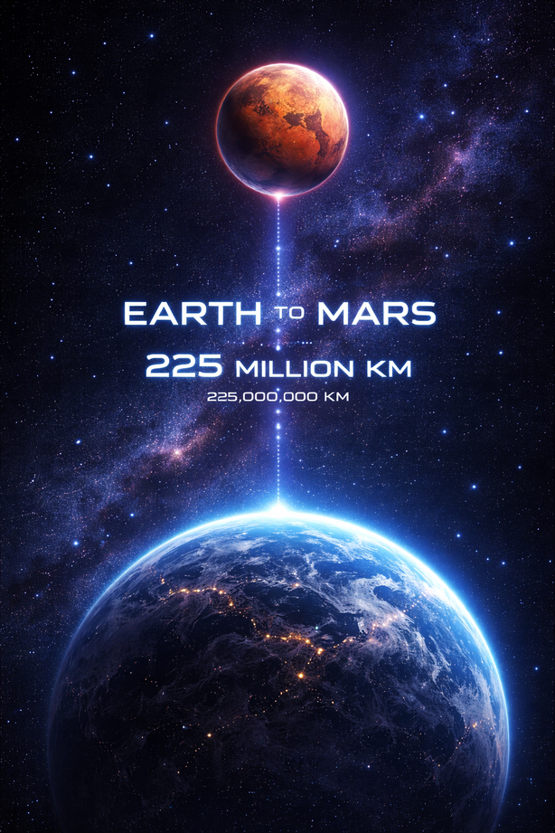

Mars:
Mars Quyosh tizimidagi to'rtinchi sayyora. U "Qizil sayyora" deb ataladi, chunki uning yuzasi temir oksidi sababli qizg'ish rangda ko'rinadi. Marsda vulqonlar, katta vodiylar va muz qoplamalari bor. Bu sayyoraning ikkita tabiiy yo'ldoshi mavjud.
Phobos:
Phobos Marsning eng katta va Marsga eng yaqin yo'ldoshidir. U Mars atrofida juda tez aylanadi — taxminan 7 soat 39 daqiqada bir marta.
Deimos:
Deimos Marsning ikkinchi va kichikroq yo'ldoshidir. U Phobosga qaraganda Marsdan uzoqroq masofada joylashgan va ancha silliqroq ko'rinadi.